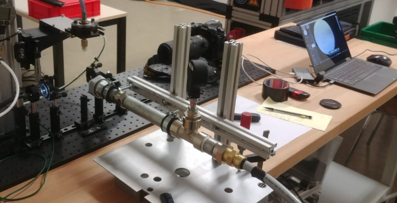
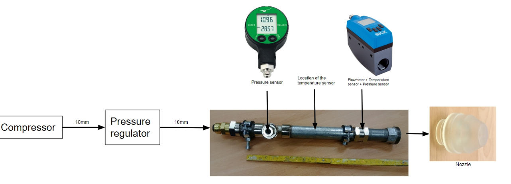
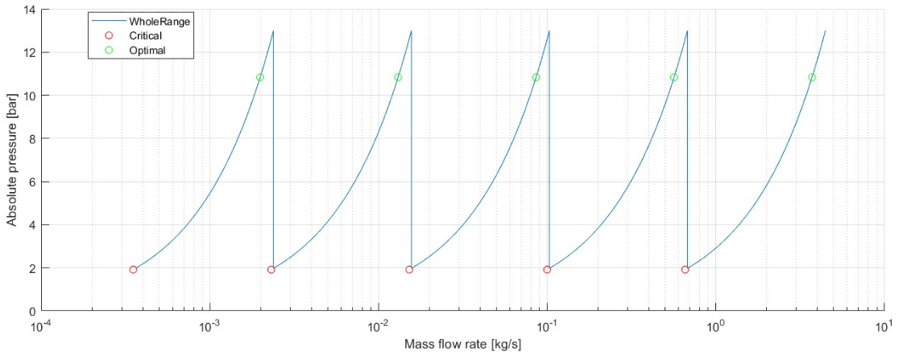
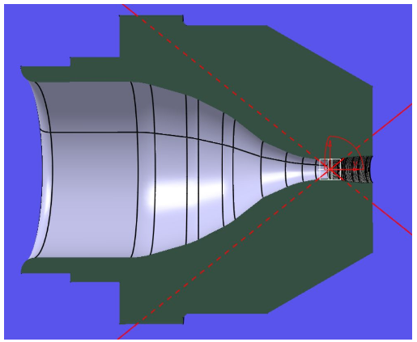
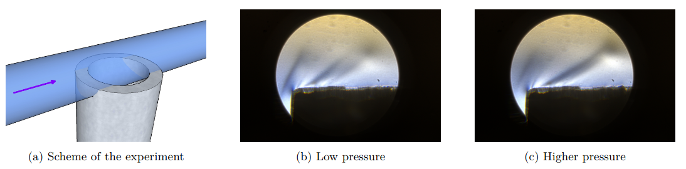

Supersonic Wind Tunnel — Design & Testing
Design, construction, and validation of an open supersonic wind tunnel — from compressor architecture to Schlieren visualization — built as a reusable student test bench at Hepia.

The completed supersonic wind tunnel test bench, with the Schlieren optical assembly in place for flow visualization.
Context
This project was part of my Master's coursework at EPFL, carried out in the aerodynamics laboratory of Hepia (HES-SO Geneva) under the supervision of Prof. Flavio Noca. The objective was both educational and practical: design and build a functional open supersonic wind tunnel from scratch, using the hardware available at Hepia, and leave behind a test bench that future students could continue to use and extend.
Project Scope
The work covered the full design chain, from the air supply through to the optical measurement system:
- Literature review on open wind tunnel architectures for supersonic flow, covering nozzle design theory, compressible flow mechanics, and Schlieren visualization techniques
- Hardware audit of existing Hepia equipment — compressor capacity, pressure vessels, and available optical components — to define the realistic design envelope before any new procurement
- Blower architecture design — laying out the full flow path from compressor outlet through the plenum, nozzle, test section, and diffuser
- Nozzle design and manufacturing — dimensioning the convergent-divergent nozzle geometry and producing it via SLA 3D printing
- Schlieren assembly design and tuning — setting up the Z-type Schlieren system for density gradient visualization in the supersonic test section
The Compressor Constraint
The dominant engineering challenge throughout was the available compressor capacity. Supersonic flow is inherently mass-flow hungry: to sustain a steady supersonic regime in the test section, the nozzle throat must be sized so that the compressor can maintain choked conditions without running out of stored air too quickly. Working through the compressible flow relations made it clear that only a nozzle with a 2 to 2.5 mm throat diameter was compatible with the available compressor — a larger throat would exhaust the supply before a meaningful test window could be established.

Schematic of the complete blower architecture — from compressor to test section and Schlieren assembly.

Mach number as a function of flow cross-section — the compressible flow relationship that constrained the nozzle throat sizing.
Nozzle Manufacturing: Why SLA?
At throat dimensions of 2–2.5 mm, the internal nozzle geometry requires tighter dimensional tolerances than standard FDM 3D printing can reliably deliver. FDM layer lines and surface roughness at this scale are not just cosmetic — they directly affect the flow, potentially triggering premature transition or distorting the Mach number distribution through the throat. The nozzle was therefore produced using Stereolithography (SLA) printing, which offers significantly finer resolution and smoother internal surfaces, ensuring that the manufactured geometry matched the designed flow path closely enough to produce clean supersonic flow.

Cross-section of the convergent-divergent nozzle — the geometry was SLA-printed to meet the surface finish requirements at the 2–2.5 mm throat.
Schlieren Visualization
Supersonic flow is invisible to the naked eye, but density gradients — the hallmark of shock waves, expansion fans, and boundary layer transitions — can be made visible using Schlieren optics. The setup built here uses a Z-type arrangement: a light source, two parabolic mirrors, a knife edge, and a camera. Variations in air density refract light by small angles; the knife edge converts those angular deflections into intensity variations in the image, making shock structures directly visible.

Schlieren image obtained from the test bench — density gradients in the supersonic jet are clearly visible, confirming supersonic flow establishment.
Outcomes & Extensions
The tunnel was successfully commissioned and demonstrated supersonic flow, confirmed by Schlieren imaging. The test bench was designed to be handed over to Hepia for continued student use. Possible extensions identified during the project include increasing the test section cross-section at the cost of a shorter usable run time — a trade-off that would require either a larger compressor or an intermediate storage vessel to buffer more air before each run.